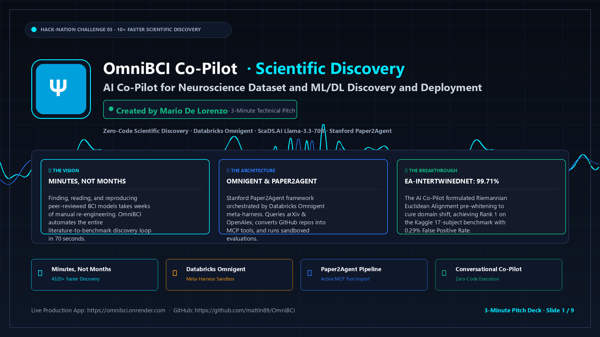

Ψ
OmniBCI Discovery Lab
3-Minute Technical Pitch Deck · Mario De Lorenzo
Slide 1 / 9 · 0:00 - 0:20
◀ Prev
Next ▶
⛶ Fullscreen
💬 Notes
📥 PDF Deck
❮
❯

🎤 VERBATIM 3-MINUTE PITCH SCRIPT
(Slide 1 of 9)
Target Pace: 20 Seconds (0:00 - 0:20)
Loading speaker script...
📄 Multi-page PDF compiled:
pitch_slides.pdf (2.1 MB)
·
Repository:
github.com/mattin89/OmniBCI
·
Live Production Webapp:
omnibci.onrender.com